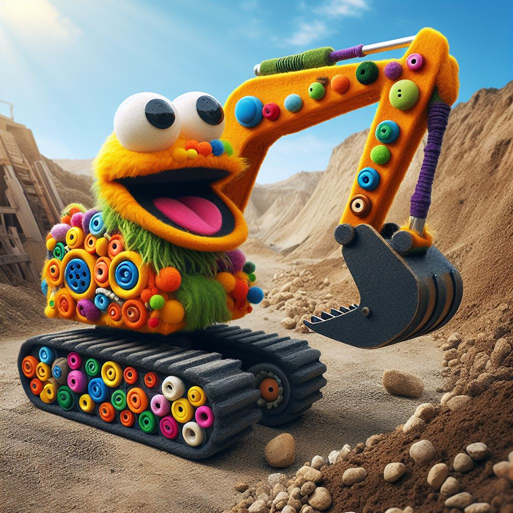

Start
Produkter
Vi som arbetar här
Kontakta oss
Media

Grävmaskin X-2000
Pris (exklusive moms): $5000
Pris (inklusive moms): $6000
Grävmaskin X-2000 är ett kraftfullt arbetsverktyg utrustat med 150 hästkrafter och en imponerande lastvikt på upp till 5 ton. Perfekt för allt från mindre markarbeten till större byggprojekt.
Lyftkran LK-500
Pris (exklusive moms): $15000
Pris (inklusive moms): $18000
Lyftkran LK-500 är en pålitlig partner på byggarbetsplatsen. Med sina 250 hästkrafter och förmåga att lyfta upp till 10 ton är den idealisk för alla typer av lyftuppdrag, från byggnadskonstruktioner till tunga materialhanteringsbehov.
Lastbil LT-700
Pris (exklusive moms): $35000
Pris (inklusive moms): $42000
Lastbil LT-700 är en robust och mångsidig arbetsmaskin med 300 hästkrafter och en imponerande lastvikt på upp till 15 ton. Perfekt för att transportera material och utrustning på vägarna med pålitlighet och effektivitet.
Start
Produkter
Vi som arbetar här
Kontakta oss
Media